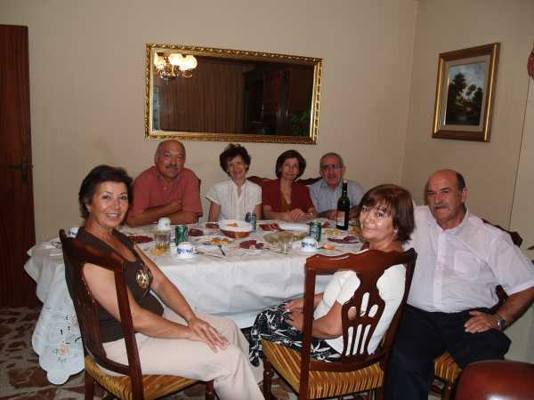

Rosa y Jaime nos tenían preparado un festín que vaya usted a saber.... Íbamos con la intención de salir todos a cenar por ahí y nos encontramos con esta sorpresa. Sois fabulosos, encantadores. Lástima que a la cita no pudieran venir Rufo y Mercedes, que se encontraban en otras obligaciones. Bueno, por arriba, Jaime, Rosa, su esposa, la cuñada y el que suscribe. Debajo, mis cuñados Miguel y Angelines y mi esposa Mari Carmen. Encantadora la familia y fantástica la velada.
 |